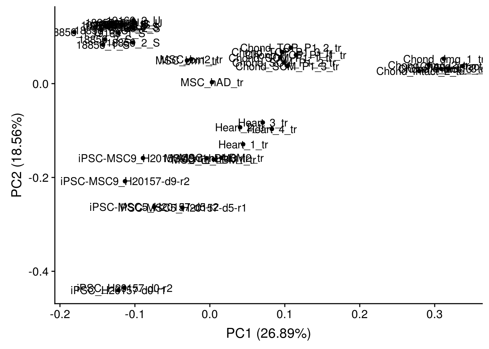

Bulk_cellComposition_analysis
Anthony Hung
2020-01-28
Last updated: 2020-02-01
Checks: 6 1
Knit directory: OAStrain/
This reproducible R Markdown analysis was created with workflowr (version 1.5.0). The Checks tab describes the reproducibility checks that were applied when the results were created. The Past versions tab lists the development history.
The R Markdown is untracked by Git. To know which version of the R Markdown file created these results, you’ll want to first commit it to the Git repo. If you’re still working on the analysis, you can ignore this warning. When you’re finished, you can run wflow_publish to commit the R Markdown file and build the HTML.
Great job! The global environment was empty. Objects defined in the global environment can affect the analysis in your R Markdown file in unknown ways. For reproduciblity it’s best to always run the code in an empty environment.
The command set.seed(20191127) was run prior to running the code in the R Markdown file. Setting a seed ensures that any results that rely on randomness, e.g. subsampling or permutations, are reproducible.
Great job! Recording the operating system, R version, and package versions is critical for reproducibility.
Nice! There were no cached chunks for this analysis, so you can be confident that you successfully produced the results during this run.
Great job! Using relative paths to the files within your workflowr project makes it easier to run your code on other machines.
Great! You are using Git for version control. Tracking code development and connecting the code version to the results is critical for reproducibility. The version displayed above was the version of the Git repository at the time these results were generated.
Note that you need to be careful to ensure that all relevant files for the analysis have been committed to Git prior to generating the results (you can use wflow_publish or wflow_git_commit). workflowr only checks the R Markdown file, but you know if there are other scripts or data files that it depends on. Below is the status of the Git repository when the results were generated:
Ignored files:
Ignored: .Rhistory
Ignored: .Rproj.user/
Ignored: data/ANT1_2.rds
Ignored: data/RUVsCPM.rds
Ignored: data/RUVsOut.rds
Ignored: data/filtered_counts.rds
Ignored: data/norm_filtered_counts.rds
Ignored: data/raw_counts_relabeled.rds
Ignored: output/ANT1.2.rds
Untracked files:
Untracked: analysis/Bulk_cellComposition_analysis.Rmd
Untracked: analysis/Pilot_GoMAnalysis.Rmd
Unstaged changes:
Modified: analysis/cellAtlasAssignments.Rmd
Modified: analysis/raw_counts_analysis.Rmd
Modified: code/cellAtlas_assignment.R
Note that any generated files, e.g. HTML, png, CSS, etc., are not included in this status report because it is ok for generated content to have uncommitted changes.
There are no past versions. Publish this analysis with wflow_publish() to start tracking its development.
Cluster pilot Bulk RNA data with subset of cellAtlas bulk data and other data to determine where my samples fall in comparison
Load data
library("RColorBrewer")
library("scales")
library("cowplot")Loading required package: ggplot2
Attaching package: 'cowplot'The following object is masked from 'package:ggplot2':
ggsave# Load colors
colors <- colorRampPalette(c(brewer.pal(9, "Blues")[1],brewer.pal(9, "Blues")[9]))(100)
pal <- c(brewer.pal(9, "Set1"), brewer.pal(8, "Set2"), brewer.pal(12, "Set3"))
#load cell atlas data matrix
load("data/cell_atlas_ref_panel")
cell.line <- cell.line[,c(12:20,35,36,40,55:57)]
#load pilot data
raw_counts <- as.matrix(readRDS("data/raw_counts_relabeled.rds"))
# load gene annotations
gene_anno <- read.delim("data/gene-annotation.txt",
sep = "\t")
#relabel pilot data genes to symbols
pilot <- raw_counts
rownames(pilot) <- gene_anno$external_gene_name[match(unlist(rownames(pilot)), gene_anno$ensembl_gene_id)]Before combining the datasets, I apply the same standardizations/normalizations performed on the cellAtlas data to my pilot data
#perform normalizations (taken from cellAtlas_assignment.R code)
pilot_norm <- apply(pilot, 2, function(x) x/sum(x))
pilot_libsize <- apply(pilot_norm, 2, function(x) x * 1e+06)
Data.use <- pilot_libsize
#Only include genes that are common between the two data sets
gene.id <- rownames(Data.use)
gene.ref <- rownames(cell.line)
common <- intersect(gene.id, gene.ref)
print(paste0("There are ", length(common), " genes in common between the two sets"))[1] "There are 4204 genes in common between the two sets"logxx <- apply(Data.use[common, ], 2, function(x) {
log(x + 0.1)
})
selected.cell.line <- apply(cell.line[common, ], 2, function(x) {
x - mean(x)
})Combine the two datasets into one matrix
combined <- cbind(logxx, selected.cell.line)Clustering (PCA)
library("ggplot2")
library("ggfortify")
# Perform PCA
pca_genes <- prcomp(t(combined), scale = T)
#Make PCA plots
autoplot(pca_genes, label = T)
Clustering (corr heatmap)
library("gplots")
Attaching package: 'gplots'The following object is masked from 'package:stats':
lowess#Corr heatmap
cors <- cor(combined, method="spearman", use="pairwise.complete.obs")
heatmap.2(cors, scale="none", margins = c(12, 12), trace='none', denscol="white",
cexCol = 0.1 + 1/log10(15), cexRow = 0.1 + 1/log10(15))
Outside data analysis
Compare pilot bulk data with bulk data collected from iPSCs, MSCs, chondrocytes from OA patients, and heart tissue (note: I have only used a Single read from each sample and trimmed to the first 50 bases to ensure that there are not mapping biases between samples). Here, I try both upperquartile and RLE normalization methods
# load in counts
outside_data_counts <- read.table("/project2/gilad/anthonyhung/Projects/OAStrain_project/bulkRNAseq_outsideData/out/counts/counts.txt", header = T)
# assign row.names
row.names(outside_data_counts) <- outside_data_counts$Geneid
# exclude extra data columns
outside_data_counts <- outside_data_counts[, -c(1:6)]
#rename samples (colnames)
names(outside_data_counts) <- c("Heart_1_tr", "MSC_nt_hBM1_tr", "Heart_4", "Chond_TCP_P1_2_tr",
"Chond_dmg_2", "Chond_intact_1", "Heart_1", "Heart_3_tr",
"MSC_nt_hBM3_tr", "Chond_intact_2", "MSC_bm1", "iPSC-MSC5_H20157-d5-r1",
"Chond_dmg_1", "Chond_SCM_P1_3", "Chond_TCP_P1_1_tr", "MSC_nt_hBM2_tr",
"MSC_bm2", "Chond_SCM_P1_1", "Chond_intact_1_tr", "iPSC-MSC9_H20157-d9-r2",
"Chond_SCM_P1_2_tr", "Chond_TCP_P1_1", "Chond_intact_3_tr", "Chond_dmg_2_tr",
"MSC_hAD", "Chond_intact_3", "MSC_nt_hBM2", "MSC_hAD_tr",
"Chond_dmg_1_tr", "Chond_intact_2_tr", "Heart_2_tr", "Heart_3",
"MSC_nt_hBM1", "Heart_4_tr", "Heart_2", "iPSC-MSC5_H20157-d5-r2",
"Chond_dmg_3", "Chond_SCM_P1_3_tr", "Chond_SCM_P1_2", "Chond_dmg_3_tr",
"MSC_bm1_tr", "MSC_nt_hBM3", "Chond_TCP_P1_3", "MSC_bm2_tr",
"iPSC_H20157-d0-r1", "Chond_SCM_P1_1_tr", "iPSC-MSC9_H20157-d9-r1", "Chond_TCP_P1_3_tr",
"iPSC_H20157-d0-r2", "Chond_TCP_P1_2")
untrimmed <- c(3,5,6,7,10,11,13,14,17,18,22,25,26,27,32,33,35,37,39,42,43,50)
#subset to only the datasets that were trimmed to 50bp
outside_data_counts <- outside_data_counts[,-untrimmed]
#Combine all bulk data together
merged_raw_data <- merge(raw_counts, outside_data_counts, by = "row.names")
row.names(merged_raw_data) <- merged_raw_data$Row.names
merged_raw_data <- merged_raw_data[,-1]
#Remove rows with all 0s
dim(merged_raw_data)[1] 58395 45merged_raw_data <- merged_raw_data[apply(merged_raw_data, 1, function(x) !all(x==0)),]
dim(merged_raw_data)[1] 47476 45Raw counts analysis
library("gplots")
library("ggplot2")
library("ggfortify")
# Perform PCA
pca_genes <- prcomp(t(data.matrix(merged_raw_data)), scale = T)
#Make PCA plots
autoplot(pca_genes, label = T)
#Corr heatmap
cors <- cor(merged_raw_data, method="spearman", use="pairwise.complete.obs")
labels <- sapply(strsplit(colnames(merged_raw_data),"_"), `[`, 1)
heatmap.2( cors, scale="none", col = colors, margins = c(12, 12), trace='none', denscol="white", labCol=labels, ColSideColors=pal[as.integer(as.factor(labels))], RowSideColors=pal[as.integer(as.factor(labels))], cexCol = 0.2 + 1/log10(15), cexRow = 0.2 + 1/log10(15))
Normalize raw merged counts: upperquartile Normalization
library(edgeR)Loading required package: limmamerged_raw_data <- DGEList(merged_raw_data, group = colnames(merged_raw_data))
upperquartile <- calcNormFactors(merged_raw_data, method = "upperquartile")
upperquartile <- cpm(upperquartile, log=TRUE, normalized.lib.sizes = T)
head(upperquartile) 18855_3_S 19160_3_S 18856_3_U 18856_1_U 18855_2_S 18856_2_S
ENSG00000000003 7.601017 7.591262 8.065072 7.889479 7.886485 6.937734
ENSG00000000005 -6.600244 -6.600244 -3.362917 -6.600244 -6.600244 -6.600244
ENSG00000000419 5.810463 5.997652 6.303690 5.992481 5.938841 5.876422
ENSG00000000457 3.479514 3.730606 3.752594 3.534100 3.727802 3.378525
ENSG00000000460 2.734989 3.189656 2.500364 2.027454 1.784772 1.918690
ENSG00000000938 -6.600244 -6.600244 -3.362917 -6.600244 -6.600244 -6.600244
19160_3_U 18855_2_U 19160_2_S 18855_1_S 18856_1_S 19160_1_S
ENSG00000000003 7.473655 7.811520 7.616499 7.446693 7.584213 7.420671
ENSG00000000005 -2.713179 -6.600244 -6.600244 -6.600244 -6.600244 -3.826993
ENSG00000000419 5.800836 6.039673 6.043344 5.631708 6.209641 5.839928
ENSG00000000457 3.786850 3.858552 4.081988 3.617119 3.589041 3.900044
ENSG00000000460 2.888309 2.258898 3.054046 2.137422 1.934588 2.935481
ENSG00000000938 -3.618822 -6.600244 -6.600244 -6.600244 -6.600244 -6.600244
19160_2_U 18855_1_U 18856_3_S 18856_2_U 18855_3_U Heart_1_tr
ENSG00000000003 7.017118 7.470988 7.769480 7.421063 7.467004 5.438292
ENSG00000000005 -3.656366 -6.600244 -6.600244 -6.600244 -6.600244 -6.600244
ENSG00000000419 5.644925 5.857292 6.216666 6.090712 5.815480 4.577290
ENSG00000000457 3.878511 3.561903 3.907355 3.749208 3.553448 3.966220
ENSG00000000460 3.051476 2.335564 2.264378 2.166455 2.096231 3.295334
ENSG00000000938 -6.600244 -6.600244 -6.600244 -6.600244 -6.600244 2.949516
MSC_nt_hBM1_tr Chond_TCP_P1_2_tr Heart_3_tr MSC_nt_hBM3_tr
ENSG00000000003 4.723491 5.890428 2.2553972 4.852111
ENSG00000000005 -6.600244 -6.600244 -6.6002444 -6.600244
ENSG00000000419 5.930937 4.544137 3.7558810 5.858455
ENSG00000000457 3.321379 3.119490 2.1884313 3.310979
ENSG00000000460 5.048588 1.265023 -0.2507509 5.140665
ENSG00000000938 -3.826993 -2.726694 2.3193921 -4.376412
iPSC-MSC5_H20157-d5-r1 Chond_TCP_P1_1_tr MSC_nt_hBM2_tr
ENSG00000000003 7.164506 5.415393 4.877361
ENSG00000000005 -1.317173 -6.600244 -6.600244
ENSG00000000419 5.104061 4.389979 5.846623
ENSG00000000457 4.415054 2.881012 3.287920
ENSG00000000460 4.192484 1.656117 5.151237
ENSG00000000938 -4.780929 -2.257546 -3.560035
Chond_intact_1_tr iPSC-MSC9_H20157-d9-r2 Chond_SCM_P1_2_tr
ENSG00000000003 6.337861 7.018176 5.625414
ENSG00000000005 -6.600244 -3.154436 -6.600244
ENSG00000000419 2.791829 6.237620 4.628252
ENSG00000000457 4.204236 3.385247 3.341020
ENSG00000000460 1.158925 4.437565 1.502989
ENSG00000000938 -6.600244 -6.600244 -3.362917
Chond_intact_3_tr Chond_dmg_2_tr MSC_hAD_tr Chond_dmg_1_tr
ENSG00000000003 5.704363 5.47050111 4.945231 5.6516428
ENSG00000000005 -2.931688 -2.10428002 -4.238873 -2.9365657
ENSG00000000419 2.845301 2.85228272 5.658641 2.7608277
ENSG00000000457 3.809187 3.44312510 3.794262 3.7108586
ENSG00000000460 1.257548 2.28550261 2.942682 0.9967162
ENSG00000000938 -1.989562 -0.07591601 -6.600244 -1.9946393
Chond_intact_2_tr Heart_2_tr Heart_4_tr iPSC-MSC5_H20157-d5-r2
ENSG00000000003 5.064755 2.2043370 2.7425656 7.680809
ENSG00000000005 -3.075975 -4.8882112 -4.0868989 -2.753296
ENSG00000000419 2.961340 3.9449149 4.4699220 5.689008
ENSG00000000457 3.535598 1.5800637 1.6400853 4.503196
ENSG00000000460 1.834114 0.1236721 -0.2593221 4.754366
ENSG00000000938 1.109611 4.0156768 3.2734698 -6.600244
Chond_SCM_P1_3_tr Chond_dmg_3_tr MSC_bm1_tr MSC_bm2_tr
ENSG00000000003 5.687845 6.3960371 5.256177 5.013122
ENSG00000000005 -4.034267 -1.5927852 -6.600244 -6.600244
ENSG00000000419 4.823518 3.0073577 5.423245 5.394106
ENSG00000000457 3.300295 3.4383116 3.166023 3.231837
ENSG00000000460 1.769329 1.2189100 1.749256 1.545696
ENSG00000000938 -1.668119 -0.7205512 -6.600244 -6.600244
iPSC_H20157-d0-r1 Chond_SCM_P1_1_tr iPSC-MSC9_H20157-d9-r1
ENSG00000000003 7.029258 6.090197 6.715044
ENSG00000000005 1.802805 -4.280230 -6.600244
ENSG00000000419 6.394817 4.853205 5.562411
ENSG00000000457 2.928815 3.517603 2.921131
ENSG00000000460 5.071419 1.552190 4.186870
ENSG00000000938 -2.538634 -2.902013 -6.600244
Chond_TCP_P1_3_tr iPSC_H20157-d0-r2
ENSG00000000003 5.341044 6.978583
ENSG00000000005 -6.600244 2.294688
ENSG00000000419 4.547562 6.401747
ENSG00000000457 3.398671 2.807551
ENSG00000000460 2.405898 5.061166
ENSG00000000938 -2.466488 -2.772884# Look at density plots
plotDensities(upperquartile, legend="topright")
Correlation heatmap of log2upperquartile normalized and unfiltered samples
cors <- cor(upperquartile, method="spearman", use="pairwise.complete.obs")
labels <- sapply(strsplit(colnames(merged_raw_data),"_"), `[`, 1)
heatmap.2( cors, scale="none", col = colors, margins = c(12, 12), trace='none', denscol="white", labCol=labels, ColSideColors=pal[as.integer(as.factor(labels))], RowSideColors=pal[as.integer(as.factor(labels))], cexCol = 0.2 + 1/log10(15), cexRow = 0.2 + 1/log10(15))
Boxplots of upperquartile across samples
library(reshape2)
meltupperquartile <- melt(upperquartile)
names(meltupperquartile) <- c("gene", "sampleID", "upperquartile")
p <- ggplot(meltupperquartile, aes(factor(sampleID), upperquartile))
p + geom_boxplot() + theme(axis.text.x = element_text(angle = 90))
Filtering for lowly expressed genes (avg log2upperquartile > 3 in at least 15 samples)
cutoff <- 3
keep <- rowSums( upperquartile > cutoff ) >= 15
counts_upperquartile <- raw_counts[keep,]
filtered_upperquartile <- upperquartile[keep,]
dim(filtered_upperquartile)[1] 10391 45Boxplots of normalized+filtered counts across samples
melt_filt_upperquartile <- melt(filtered_upperquartile)
names(melt_filt_upperquartile) <- c("gene", "sampleID", "log2upperquartile")
p1 <- ggplot(melt_filt_upperquartile, aes(factor(sampleID), log2upperquartile))
p1 + geom_boxplot() + theme(axis.text.x = element_text(angle = 90))
plotDensities(filtered_upperquartile, legend = F)
Correlation heatmap of log2upperquartile normalized and filtered samples
cors <- cor(filtered_upperquartile, method="spearman", use="pairwise.complete.obs")
labels <- sapply(strsplit(colnames(merged_raw_data),"_"), `[`, 1)
heatmap.2( cors, scale="none", col = colors, margins = c(12, 12), trace='none', denscol="white", labCol=labels, ColSideColors=pal[as.integer(as.factor(labels))], RowSideColors=pal[as.integer(as.factor(labels))], cexCol = 0.2 + 1/log10(15), cexRow = 0.2 + 1/log10(15))
PCA of log2upperquartile normalized and filtered samples
# Perform PCA
pca_genes <- prcomp(t(data.matrix(filtered_upperquartile)), scale = T)
#Make PCA plots
autoplot(pca_genes, label = T)
Normalize raw merged counts: RLE Normalization
library(edgeR)
merged_raw_data <- DGEList(merged_raw_data, group = colnames(merged_raw_data))
RLE <- calcNormFactors(merged_raw_data, method = "RLE")
RLE <- cpm(RLE, log=TRUE, normalized.lib.sizes = T)
head(RLE) 18855_3_S 19160_3_S 18856_3_U 18856_1_U 18855_2_S 18856_2_S
ENSG00000000003 7.155237 7.205309 7.447920 7.361606 7.392117 6.400575
ENSG00000000005 -6.434432 -6.434432 -3.873864 -6.434432 -6.434432 -6.434432
ENSG00000000419 5.364782 5.611771 5.686633 5.464713 5.444576 5.339346
ENSG00000000457 3.034397 3.345139 3.136196 3.006980 3.234048 2.842188
ENSG00000000460 2.290347 2.804426 1.885064 1.501792 1.292869 1.383922
ENSG00000000938 -6.434432 -6.434432 -3.873864 -6.434432 -6.434432 -6.434432
19160_3_U 18855_2_U 19160_2_S 18855_1_S 18856_1_S 19160_1_S
ENSG00000000003 7.138704 7.376439 7.201362 6.992274 7.010141 7.106480
ENSG00000000005 -3.008255 -6.434432 -6.434432 -6.434432 -6.434432 -4.060226
ENSG00000000419 5.465961 5.604675 5.628280 5.177404 5.635653 5.525805
ENSG00000000457 3.452311 3.423966 3.667248 3.163305 3.015746 3.586211
ENSG00000000460 2.554156 1.825387 2.639758 1.684771 1.363069 2.622022
ENSG00000000938 -3.879923 -6.434432 -6.434432 -6.434432 -6.434432 -6.434432
19160_2_U 18855_1_U 18856_3_S 18856_2_U 18855_3_U Heart_1_tr
ENSG00000000003 6.700970 7.141777 7.034296 6.867364 7.092582 6.277520
ENSG00000000005 -3.900038 -6.434432 -6.434432 -6.434432 -6.434432 -6.434432
ENSG00000000419 5.328849 5.528152 5.481596 5.537099 5.441140 5.416413
ENSG00000000457 3.562719 3.233173 3.172971 3.196168 3.179564 4.805220
ENSG00000000460 2.735994 2.007524 1.531817 1.614841 1.723350 4.134124
ENSG00000000938 -6.434432 -6.434432 -6.434432 -6.434432 -6.434432 3.788153
MSC_nt_hBM1_tr Chond_TCP_P1_2_tr Heart_3_tr MSC_nt_hBM3_tr
ENSG00000000003 4.226281 6.022694 3.2328099 4.370835
ENSG00000000005 -6.434432 -6.434432 -6.4344315 -6.434432
ENSG00000000419 5.433540 4.676411 4.7341617 5.377033
ENSG00000000457 2.824708 3.251790 3.1657802 2.830260
ENSG00000000460 4.551312 1.397428 0.7203624 4.659336
ENSG00000000938 -4.206320 -2.592120 3.2968631 -4.692893
iPSC-MSC5_H20157-d5-r1 Chond_TCP_P1_1_tr MSC_nt_hBM2_tr
ENSG00000000003 7.5059715 5.541037 4.444064
ENSG00000000005 -0.9799501 -6.434432 -6.434432
ENSG00000000419 5.4454888 4.515633 5.413199
ENSG00000000457 4.7564515 3.006703 2.855147
ENSG00000000460 4.5338681 1.781885 4.717896
ENSG00000000938 -4.4870949 -2.129905 -3.905977
Chond_intact_1_tr iPSC-MSC9_H20157-d9-r2 Chond_SCM_P1_2_tr
ENSG00000000003 7.275156 7.032248 5.661060
ENSG00000000005 -6.434432 -3.125765 -6.434432
ENSG00000000419 3.728311 6.251702 4.663926
ENSG00000000457 5.141274 3.399465 3.376776
ENSG00000000460 2.093536 4.451701 1.539103
ENSG00000000938 -6.434432 -6.434432 -3.312924
Chond_intact_3_tr Chond_dmg_2_tr MSC_hAD_tr Chond_dmg_1_tr
ENSG00000000003 6.678346 6.4068057 4.524272 6.668137
ENSG00000000005 -2.007089 -1.1945420 -4.525566 -1.971571
ENSG00000000419 3.818518 3.7878737 5.237588 3.776476
ENSG00000000457 4.782838 4.3790026 3.373598 4.726979
ENSG00000000460 2.228983 3.2206833 2.522451 2.010019
ENSG00000000938 -1.041011 0.8540266 -6.434432 -1.004659
Chond_intact_2_tr Heart_2_tr Heart_4_tr iPSC-MSC5_H20157-d5-r2
ENSG00000000003 6.149181 3.0190060 3.7215581 7.676719
ENSG00000000005 -2.051649 -4.2416559 -3.2202547 -2.744917
ENSG00000000419 4.045076 4.7604044 5.4495836 5.684946
ENSG00000000457 4.619629 2.3940984 2.6179774 4.499179
ENSG00000000460 2.916783 0.9345528 0.7129331 4.750336
ENSG00000000938 2.190996 4.8311831 4.2527575 -6.434432
Chond_SCM_P1_3_tr Chond_dmg_3_tr MSC_bm1_tr MSC_bm2_tr
ENSG00000000003 5.614903 7.4071012 4.892904 4.676196
ENSG00000000005 -4.064056 -0.6016691 -6.434432 -6.434432
ENSG00000000419 4.750619 4.0176799 5.059952 5.057134
ENSG00000000457 3.227573 4.4488456 2.803311 2.895378
ENSG00000000460 1.697121 2.2272170 1.387769 1.210700
ENSG00000000938 -1.732630 0.2796853 -6.434432 -6.434432
iPSC_H20157-d0-r1 Chond_SCM_P1_1_tr iPSC-MSC9_H20157-d9-r1
ENSG00000000003 7.208712 6.010708 6.671216
ENSG00000000005 1.982220 -4.307171 -6.434432
ENSG00000000419 6.574270 4.773771 5.518611
ENSG00000000457 3.108252 3.438315 2.877588
ENSG00000000460 5.250870 1.473600 4.143148
ENSG00000000938 -2.359992 -2.961084 -6.434432
Chond_TCP_P1_3_tr iPSC_H20157-d0-r2
ENSG00000000003 5.353992 7.143388
ENSG00000000005 -6.434432 2.459494
ENSG00000000419 4.560540 6.566552
ENSG00000000457 3.411736 2.972357
ENSG00000000460 2.419119 5.225971
ENSG00000000938 -2.444421 -2.608008# Look at density plots
plotDensities(RLE, legend="topright")
Correlation heatmap of log2RLE normalized and unfiltered samples
cors <- cor(RLE, method="spearman", use="pairwise.complete.obs")
labels <- sapply(strsplit(colnames(merged_raw_data),"_"), `[`, 1)
heatmap.2( cors, scale="none", col = colors, margins = c(12, 12), trace='none', denscol="white", labCol=labels, ColSideColors=pal[as.integer(as.factor(labels))], RowSideColors=pal[as.integer(as.factor(labels))], cexCol = 0.2 + 1/log10(15), cexRow = 0.2 + 1/log10(15))
Boxplots of RLE across samples
library(reshape2)
meltRLE <- melt(RLE)
names(meltRLE) <- c("gene", "sampleID", "RLE")
p <- ggplot(meltRLE, aes(factor(sampleID), RLE))
p + geom_boxplot() + theme(axis.text.x = element_text(angle = 90))
Filtering for lowly expressed genes (avg log2RLE > 3 in at least 15 samples)
cutoff <- 3
keep <- rowSums( RLE > cutoff ) >= 15
counts_RLE <- raw_counts[keep,]
filtered_RLE <- RLE[keep,]
dim(filtered_RLE)[1] 10283 45Boxplots of normalized+filtered counts across samples
melt_filt_RLE <- melt(filtered_RLE)
names(melt_filt_RLE) <- c("gene", "sampleID", "log2RLE")
p1 <- ggplot(melt_filt_RLE, aes(factor(sampleID), log2RLE))
p1 + geom_boxplot() + theme(axis.text.x = element_text(angle = 90))
plotDensities(filtered_RLE, legend = F)
Correlation heatmap of log2RLE normalized and filtered samples
cors <- cor(filtered_RLE, method="spearman", use="pairwise.complete.obs")
labels <- sapply(strsplit(colnames(merged_raw_data),"_"), `[`, 1)
heatmap.2( cors, scale="none", col = colors, margins = c(12, 12), trace='none', denscol="white", labCol=labels, ColSideColors=pal[as.integer(as.factor(labels))], RowSideColors=pal[as.integer(as.factor(labels))], cexCol = 0.2 + 1/log10(15), cexRow = 0.2 + 1/log10(15))
PCA of log2RLE normalized and filtered samples
# Perform PCA
pca_genes <- prcomp(t(data.matrix(filtered_RLE)), scale = T)
#Make PCA plots
autoplot(pca_genes, label = T)
sessionInfo()R version 3.4.3 (2017-11-30)
Platform: x86_64-pc-linux-gnu (64-bit)
Running under: Scientific Linux 7.4 (Nitrogen)
Matrix products: default
BLAS/LAPACK: /software/openblas-0.2.19-el7-x86_64/lib/libopenblas_haswellp-r0.2.19.so
locale:
[1] LC_CTYPE=en_US.UTF-8 LC_NUMERIC=C
[3] LC_TIME=en_US.UTF-8 LC_COLLATE=en_US.UTF-8
[5] LC_MONETARY=en_US.UTF-8 LC_MESSAGES=en_US.UTF-8
[7] LC_PAPER=en_US.UTF-8 LC_NAME=C
[9] LC_ADDRESS=C LC_TELEPHONE=C
[11] LC_MEASUREMENT=en_US.UTF-8 LC_IDENTIFICATION=C
attached base packages:
[1] stats graphics grDevices utils datasets methods base
other attached packages:
[1] reshape2_1.4.3 edgeR_3.20.9 limma_3.34.9 gplots_3.0.1.1
[5] ggfortify_0.4.8 cowplot_0.9.3 ggplot2_3.2.1 scales_1.1.0
[9] RColorBrewer_1.1-2
loaded via a namespace (and not attached):
[1] gtools_3.8.1 tidyselect_0.2.5 locfit_1.5-9.1 xfun_0.11
[5] purrr_0.3.3 lattice_0.20-35 colorspace_1.4-1 vctrs_0.2.0
[9] htmltools_0.4.0 yaml_2.2.0 rlang_0.4.2 later_1.0.0
[13] pillar_1.4.2 glue_1.3.1 withr_2.1.2 lifecycle_0.1.0
[17] plyr_1.8.4 stringr_1.4.0 munsell_0.5.0 gtable_0.3.0
[21] workflowr_1.5.0 caTools_1.17.1.3 evaluate_0.14 labeling_0.3
[25] knitr_1.26 httpuv_1.5.2 Rcpp_1.0.3 KernSmooth_2.23-15
[29] promises_1.1.0 backports_1.1.5 gdata_2.18.0 farver_2.0.1
[33] fs_1.3.1 gridExtra_2.3 digest_0.6.23 stringi_1.4.3
[37] dplyr_0.8.3 grid_3.4.3 rprojroot_1.3-2 tools_3.4.3
[41] bitops_1.0-6 magrittr_1.5 lazyeval_0.2.2 tibble_2.1.3
[45] crayon_1.3.4 tidyr_1.0.0 pkgconfig_2.0.3 zeallot_0.1.0
[49] assertthat_0.2.1 rmarkdown_1.18 R6_2.4.1 git2r_0.26.1
[53] compiler_3.4.3